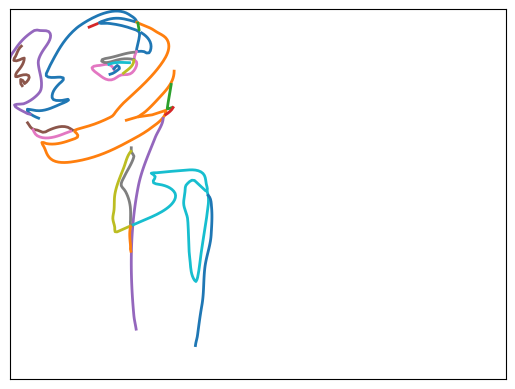
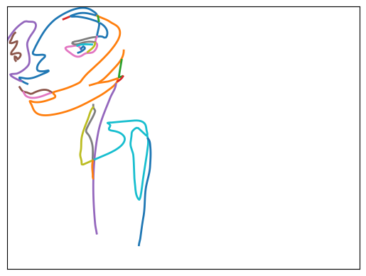
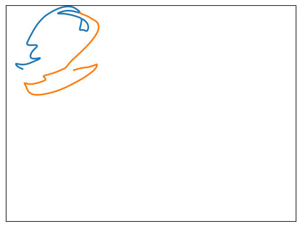
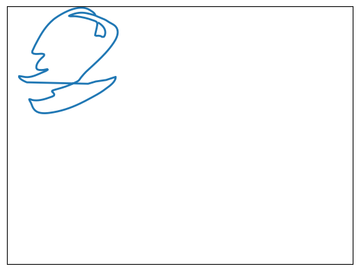
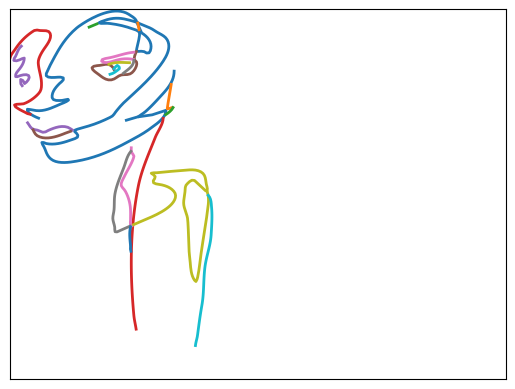

fname = "../data/svg/0000.svg"
strokes = svg_to_strokes(fname)
print(f"{fname} has {len(strokes)} distinct strokes")
plot_strokes(strokes)../data/svg/0000.svg has 22 distinct strokes
When loading up an SVG and parsing its paths, sometimes the paths are segmented more than they need to be. For example:
fname = "../data/svg/0000.svg"
strokes = svg_to_strokes(fname)
print(f"{fname} has {len(strokes)} distinct strokes")
plot_strokes(strokes)../data/svg/0000.svg has 22 distinct strokes
Taking a closer look at the first two strokes, it appears that they could be linked.
plot_strokes([strokes[0], strokes[1]])
# glance at the underlying data and path lengths
strokes[0][:5], len(strokes[0]), strokes[1][:5], len(strokes[1])
(array([[12.67485995, 64.03514953],
[11.58004151, 63.41852999],
[10.42656469, 62.66524592],
[ 9.32611317, 61.78332364],
[ 8.39037061, 60.78078948]]),
145,
array([[56.22437874, 6.67328336],
[57.31087459, 7.40713502],
[58.46074883, 8.07705417],
[59.64263365, 8.71468671],
[60.82516127, 9.35167852]]),
155)What’s not obvious yet is how to best join the strokes. Which endpoints of each line are closest?
Does the start of stroke 0 come closest to the end of stroke 1? If so, we’d concatenate the points of stroke 0 after the points of stroke 1.
plot_strokes([strokes[0], strokes[1]])
plot_strokes([np.concatenate([strokes[1], strokes[0]], axis=0)])
That didn’t work - there’s an awkward extra line that didn’t show up in the original image.
Instead we can iterate through the combinations and find the combination of endpoints with the shortest distance.
s0_endpoints = [
strokes[0][0],
strokes[0][-1],
]
s1_endpoints = [
strokes[1][0],
strokes[1][-1],
]
for pos0 in [0, -1]:
for pos1 in [0, -1]:
d = np.linalg.norm(s0_endpoints[pos0] - s1_endpoints[pos1])
print(
f"dist = {d} from s0_{'START' if pos0==0 else 'END'} to s1_{'START' if pos1==0 else 'END'}"
)dist = 72.02044347447433 from s0_START to s1_START
dist = 38.94401437099788 from s0_START to s1_END
dist = 6.7684841145897465 from s0_END to s1_START
dist = 52.632823136243246 from s0_END to s1_ENDWe’ll want a helper function to join these strokes - for example if the closest distance was between stroke 0 start and and stroke 1 start, we’d have to flip one of the lists in order to concatenate them and haave a contiguous set of points.
START = 0
END = -1
def join_2_strokes(lhs, l_pos, rhs, r_pos):
to_join = None
if l_pos == START:
if r_pos == START:
to_join = [np.flip(rhs, axis=0), lhs]
elif r_pos == END:
to_join = [rhs, lhs]
else:
raise Exception(f"invalid r_pos: {r_pos}")
elif l_pos == END:
if r_pos == START:
to_join = [lhs, rhs]
elif r_pos == END:
to_join = [lhs, np.flip(rhs, axis=0)]
else:
raise Exception(f"invalid r_pos: {r_pos}")
else:
raise Exception(f"invalid l_pos: {l_pos}")
return np.concatenate(to_join, axis=0)
def select_2_strokes(strokes, l_idx, r_idx):
lhs = strokes[l_idx]
rhs = strokes[r_idx]
remaining = [x for i, x in enumerate(strokes) if i not in [l_idx, r_idx]]
return lhs, rhs, remaining
def join_endpoints(strokes, l_idx, l_pos, r_idx, r_pos):
lhs, rhs, remaining = select_2_strokes(strokes, l_idx, r_idx)
joined = join_2_strokes(lhs, l_pos, rhs, r_pos)
return [joined] + remainingjoin_endpoints (strokes, l_idx, l_pos, r_idx, r_pos)
select_2_strokes (strokes, l_idx, r_idx)
join_2_strokes (lhs, l_pos, rhs, r_pos)
We’ll want to apply this function iteratively to a collection of strokes. So we’ll want to be able to pick 2 strokes out of the list, join them, and return them combined as a full list of strokes.
# verify joining 2 strokes and adding them back to the list
plot_strokes(join_endpoints(strokes, 0, END, 1, START))
Now we’ll want a way to find which pairs of strokes to join. Let’s start by iterating through all pairs of strokes and comparing the distance between their start and endpoints.
def closest_endpoint_pair(strokes):
min_dist = 1e10
l_idx = None
r_idx = None
l_pos = None
r_pos = None
for i, lhs in enumerate(strokes):
for j, rhs in enumerate(strokes):
if i == j:
continue
l0_r0_dist = np.linalg.norm(lhs[START] - rhs[START])
l0_r1_dist = np.linalg.norm(lhs[START] - rhs[END])
l1_r0_dist = np.linalg.norm(lhs[END] - rhs[START])
l1_r1_dist = np.linalg.norm(lhs[END] - rhs[END])
# print(i, len(c), (l0_r0_dist, l0_r1_dist, l1_r0_dist, l1_r1_dist))
if l0_r0_dist < min_dist:
min_dist = l0_r0_dist
l_idx = i
r_idx = j
l_pos = START
r_pos = START
if l0_r1_dist < min_dist:
min_dist = l0_r1_dist
l_idx = i
r_idx = j
l_pos = START
r_pos = END
if l1_r0_dist < min_dist:
min_dist = l1_r0_dist
l_idx = i
r_idx = j
l_pos = END
r_pos = START
if l1_r1_dist < min_dist:
min_dist = l1_r1_dist
l_idx = i
r_idx = j
l_pos = END
r_pos = END
return min_dist, l_idx, l_pos, r_idx, r_pos
def merge_closest_strokes(strokes, dist_threshold=10.0):
sorted_strokes = sorted(strokes, key=lambda s: len(s), reverse=True)
min_dist, min_l_idx, min_l_pos, min_r_idx, min_r_pos = closest_endpoint_pair(
sorted_strokes
)
# print(f"Minimum distance: {min_dist}")
# print(f"From {min_l_idx}_{min_l_pos} ({len(strokes[min_l_idx])} points)")
# print(f"To {min_r_idx}_{min_r_pos} ({len(strokes[min_l_idx])} points)")
if min_dist >= dist_threshold:
# print("not merging")
return min_dist, strokes
return min_dist, join_endpoints(
sorted_strokes, min_l_idx, min_l_pos, min_r_idx, min_r_pos
)
def merge_until(strokes, dist_threshold=10.0):
curr_strokes = copy.copy(strokes)
all_iterations = [curr_strokes]
for i in range(len(curr_strokes) - 1):
min_dist, curr_strokes = merge_closest_strokes(
curr_strokes, dist_threshold=dist_threshold
)
# print(f"[{i}] - len(curr_strokes) = {len(curr_strokes)}, min_dist = {min_dist}")
if min_dist > dist_threshold:
# print("exceeded dist threshold")
break
all_iterations.append(curr_strokes)
# print(
# f"finished merging - len(curr_strokes) = {len(curr_strokes)}, min_dist = {min_dist}"
# )
return curr_strokes, all_iterationsmerge_until (strokes, dist_threshold=10.0)
merge_closest_strokes (strokes, dist_threshold=10.0)
closest_endpoint_pair (strokes)
actual_dist, l_idx, l_pos, r_idx, r_pos = closest_endpoint_pair(strokes)
print(actual_dist, l_idx, l_pos, r_idx, r_pos)
expected_lhs = strokes[l_idx][l_pos]
expected_rhs = strokes[r_idx][r_pos]
expected_dist = np.linalg.norm(expected_lhs - expected_rhs)
print(expected_dist)
test_eq(actual_dist, expected_dist)0.40342377522616846 12 -1 13 0
0.40342377522616846_, new_strokes = merge_closest_strokes(strokes)
# the list of strokes should be shorter by 1, since 2 strokes got merged
test_eq(len(strokes) - 1, len(new_strokes))
# the next closest distance should be different than what we got before,
# as that gap between lines no longer exists post-merge.
new_dist, *_ = closest_endpoint_pair(new_strokes)
test_ne(actual_dist, new_dist)
# Also if that was the shortest gap between points, the next distance we
# get will be larger.
test_eq(True, new_dist > actual_dist)(5, [22, 21, 20, 19, 18, 17, 16, 15, 14, 13, 12, 11, 10, 9, 8, 7, 6, 5])def closest_splice_pair(strokes):
min_dist = 1e10
l_idx = None
r_idx = None
r_sub = None
for i, lhs in enumerate(strokes):
lhs_start = lhs[START]
lhs_end = lhs[END]
# print(f"LHS {i}: {lhs_start}, {lhs_end}")
for j, rhs in enumerate(strokes):
# print(f"\tRHS {j}")
if i == j:
continue
for k in range(len(rhs) - 1):
l0_r0_dist = np.linalg.norm(lhs_start - rhs[k])
l1_r0_dist = np.linalg.norm(lhs_end - rhs[k])
total_dist = l0_r0_dist + l1_r0_dist
# print(f"\t\tRHS {j} pos {k} - total_dist={total_dist}")
if total_dist < min_dist:
min_dist = total_dist
l_idx = i
r_idx = j
r_sub = k
return min_dist, l_idx, r_idx, r_subclosest_splice_pair (strokes)
def splice_2_strokes(lhs, rhs, k):
return np.concatenate([rhs[:k], lhs, rhs[k:]], axis=0)
#| export
def join_splice(strokes, l_idx, r_idx, k):
lhs, rhs, remaining = select_2_strokes(strokes, l_idx, r_idx)
joined = splice_2_strokes(lhs, rhs, k)
return [joined] + remaining
#| export
def splice_until(strokes, dist_threshold=10.0):
curr_strokes = copy.copy(strokes)
all_iterations = [curr_strokes]
for i in range(len(curr_strokes) - 1):
min_dist, min_l_idx, min_r_idx, k = closest_splice_pair(curr_strokes)
# print(f"Minimum distance: {min_dist}")
if min_dist > dist_threshold:
# print("exceeded dist threshold")
break
# print(f"From {min_l_idx} ({len(strokes[min_l_idx])} points)")
# print(f"To {min_r_idx} ({len(strokes[min_l_idx])} points)")
# print(f"At index k={k}")
curr_strokes = join_splice(curr_strokes, min_l_idx, min_r_idx, k)
all_iterations.append(curr_strokes)
# print(
# f"finished merging - len(curr_strokes) = {len(curr_strokes)}, min_dist = {min_dist}"
# )
return curr_strokes, all_iterationssplice_until (strokes, dist_threshold=10.0)
join_splice (strokes, l_idx, r_idx, k)
splice_2_strokes (lhs, rhs, k)